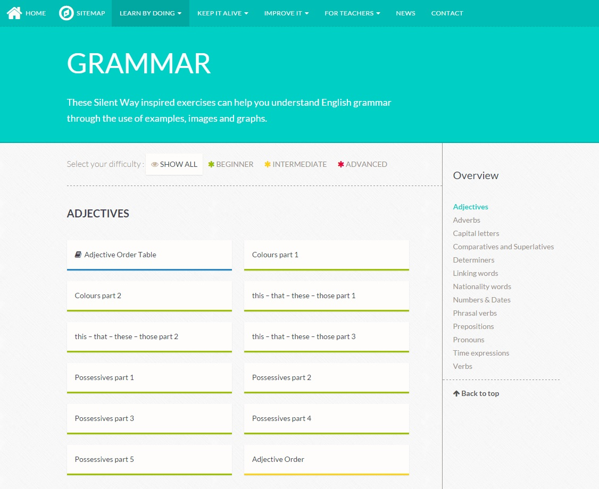
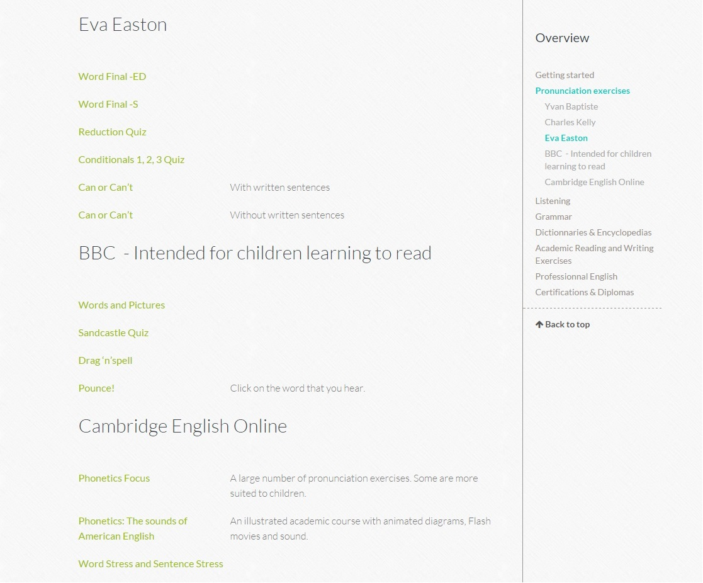

Réaliser la refonte complète du site English Online France
Le site d'English Online France a été conçu dans le but de promouvoir l'apprentissage de la langue anglaise sur l'internet.
Rédigé et entretenu par des professeurs enseignant la langue anglaise, ce site propose un contenu pédagogique de qualité.
Voir le siteTâches réalisées
Audit
Conception
Développement
Intégration
Formation

Une ancienne version d'un site à retravailler en profondeur.
L'arborescence du site a été complètement retravaillée de sorte à faciliter la navigation qui n'apparaissait pas cohérente sur l'ancien site.

L'ancienne version du site telle qu'elle était avant mon intervention est consultable grâce à la magie de Wayback Machine via ce lien :
Voir l'ancienne versionDéfinir le projet avec les commanditaires.
Il s'agit de faire le tri dans une multitude d'idées énoncées lors d'un premier audit, à travers un brainstorming. Une introduction orale du projet et l'énonciation de sa philosophie sont nécessaires dans un premier temps, dans la mesure où elles permettent de dégager les besoins primaires à concrétiser dans le futur site web.
La réalisation et la présentation de plusieurs prototypes est incontournable. Cela a permis de restreindre le cercle d'idées afin de cibler les besoins des commanditaires de manière plus précise et plus réaliste.

Redorer l'image du site à travers une identité visuelle moderne et pédagogique.
Une série de pictogrammes a été conçue dans l'optique d'accompagner visuellement la définition des différents thèmes que les pages développent à l'intérieur du site.
Le choix d'une harmonie colorée vive est justifiée par la nature pédagogique du site. L'objectif visé était de rendre le site accueillant et attiser la curiosité du visiteur afin d'inviter ce dernier à consulter le site plus profondément.

Un site plus moderne implique l'intégration de nouvelles technologies.
La nouvelle façon de naviguer au sein des pages est proposée grâce au développement d'un menu latéral déroulant. Une barre de recherche a été aussi intégrée afin de trouver directement ce que l'on cherche à partir de mots-clés.
Une fonction d'ajout de contenu spéciaux a été implémenté dans le CMS. Cela permet ainsi d'inclure tous les fichiers sources composant les exercices réalisés avec le créateur de QCM HotPotatoes.
Le module ACF pour WordPress a été d'un grand secours pour le développement de la page d'accueil. Quant aux pages internes, un menu latéral dépliable selon la section où l'on se situe sur l'écran est développé en mixant le module TOC+ au code source du menu latéral de la documentation Bootstrap.
Modèle de page d'exercices.
Modèle de page de liens.
Former les commanditaires aux nouveaux moyens disponibles.
Afin de rendre l'application utilisable par les futurs administrateurs et rédacteurs, la rédaction d'un guide d'utilisation suivie d'une formation à la nouvelle solution web ont été réalisés.
Au cours de cette formation, j'ai appris aux professeurs à se servir convenablement de WordPress et des fonctionnalités sur-mesure que j'y ai intégrées comme l'ajout de nouveaux exercices d'anglais ou encore la personnalisation du contenu de la page d'accueil.
Mention spéciale
Ce projet a répondu à la demande de l'établissement dans son intégralité et a été accompli dans les délais. Une réussite !
Lire la lettre de recommandation